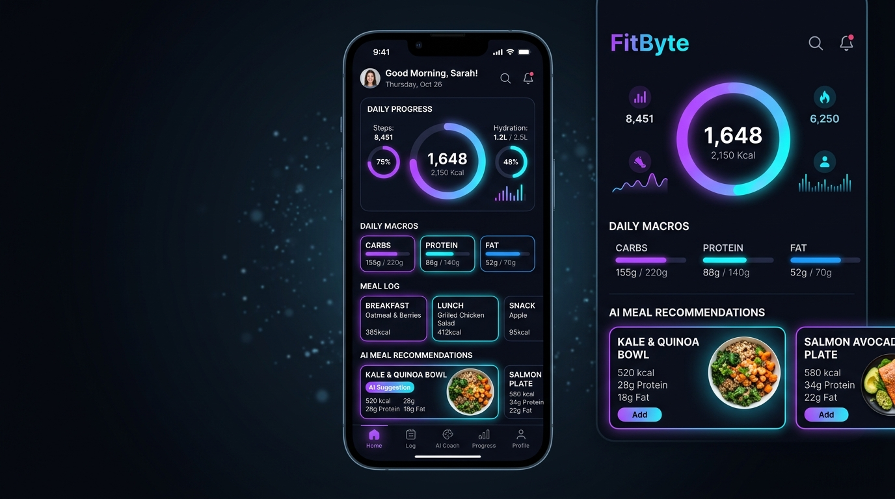
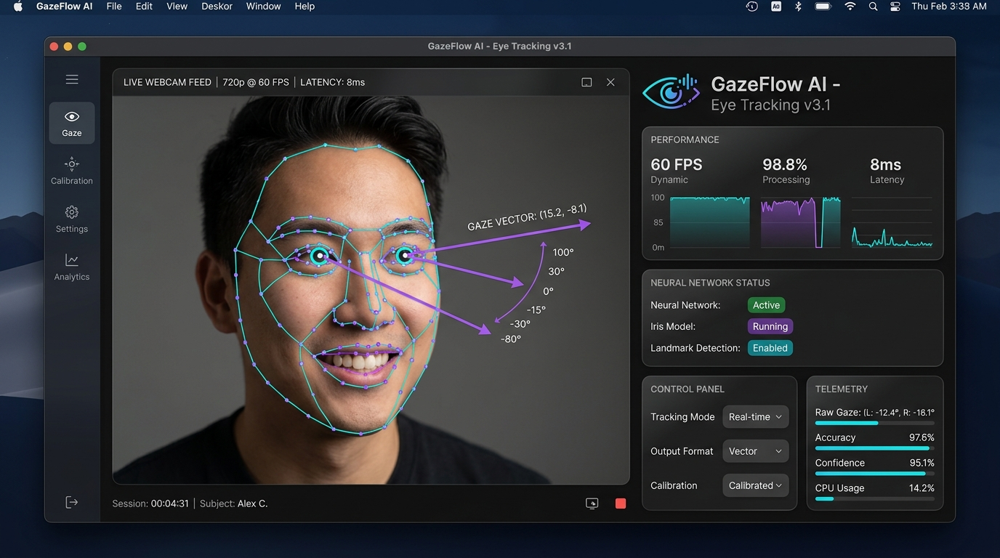
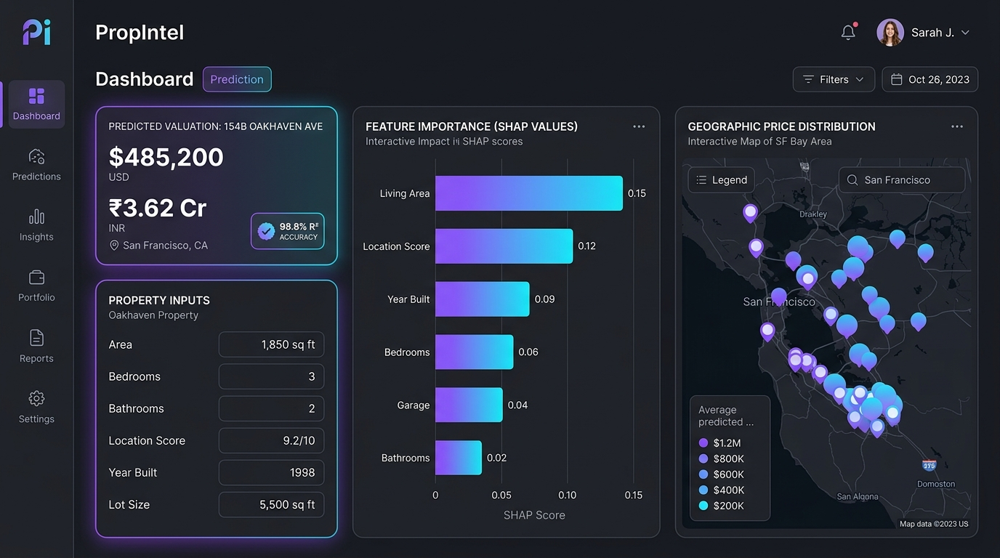
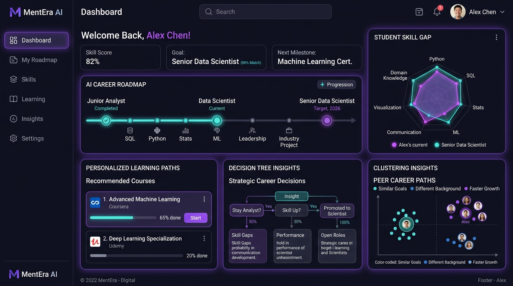
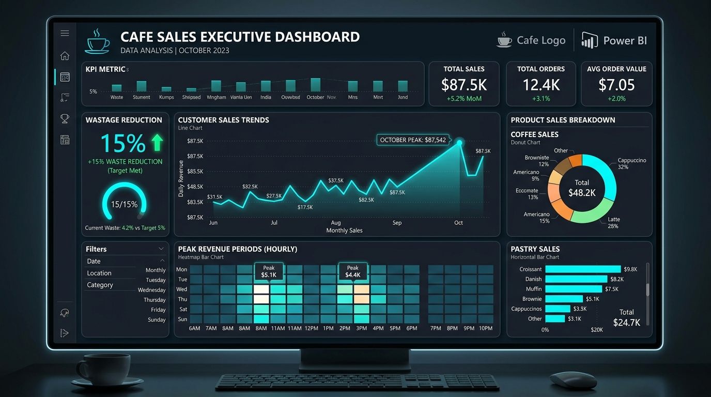

Engineering Portfolio
Projects & Case Studies
Measurable impact through machine learning models, exploratory data analytics, Power BI dashboards, and cross-platform mobile apps.
Mobile & AI

FitByte — AI Health & Diet Analyzer
Jun 2026 - Present
15+ Beta Testers
500+ Food Items
~80% Less Manual Logging
- Built a cross-platform Android application using Flutter and Dart that analyzes user health data (age, weight, activity level) and delivers personalized AI-driven diet recommendations across 500+ food items.
- Integrated REST APIs for real-time nutritional data and connected Firebase for authentication and cloud-synced progress tracking, reducing manual logging by approximately 80%.
- Designed an interactive dashboard with dynamic charts for calorie, macro, and weekly fitness visualization; validated with 15+ beta testers. Used Figma for UI/UX prototyping.
- Flutter
- Dart
- Firebase
- REST API
- Android Studio
- Figma
Computer Vision & AI

GazeFlow AI — Real-Time Eye & Gaze Tracking
2026
Real-Time 60 FPS
MediaPipe Landmarker
Zero-Latency Pipeline
- Engineered an AI-powered computer vision desktop application using Python, OpenCV, and Google MediaPipe Face Landmarker for real-time facial landmarking, iris centering, and ocular gaze vector computation.
- Architected a multithreaded desktop UI using PyQt/PySide with real-time 60 FPS webcam ingestion, mirrored ocular telemetry feedback, and safe camera resource cleanup on disconnects.
- Implemented high-precision geometric pupil/iris coordinate calibration and custom color-coded landmark visualization overlays for non-invasive ocular observation and assistive computing foundations.
- Python
- OpenCV
- MediaPipe
- PyQt / PySide
- Computer Vision
- Real-Time AI
ML & Property Analytics

PropIntel — House Price Prediction & Analytics
2025 - 2026
98.83% R² Accuracy
6,025 Properties
FastAPI & Streamlit
- Architected an end-to-end Machine Learning property valuation platform achieving 98.83% R² accuracy ($21,290 MAE / 4.10% MAPE) across 6,025 real estate properties using a log-target Super Ensemble (XGBoost, GradientBoosting, HistGradientBoosting).
- Engineered an automated leakage-free Scikit-learn Pipeline with ColumnTransformer, domain feature engineering (luxury index, room ratios), and multi-currency valuation conversion (USD, INR Crores/Lakhs, EUR, GBP).
- Integrated Tree SHAP explainability for feature impact transparency, a production FastAPI microservice with Pydantic validation, a multi-tab interactive Streamlit analytics dashboard, and a 17/17 passing Pytest suite.
- Python
- XGBoost
- Scikit-learn
- FastAPI
- Streamlit
- SHAP (XAI)
Machine Learning & AI

Personalized Career Adviser System
Sep 2025 - Nov 2025
~85% Model Accuracy
1,200+ Student Profiles
SIH 2025 Innovation
- Built a career recommendation system trained on 1,200+ student profiles using decision trees, K-means clustering, and collaborative filtering, achieving approximately 85% accuracy on test data.
- Integrated the ChatGPT API to generate personalized learning roadmaps based on skill-gap analysis, building an end-to-end pipeline with Python and Scikit-learn.
- Developed and pitched at the Smart India Hackathon (SIH 2025), addressing student career uncertainty with data-backed learning trajectories.
- Python
- Machine Learning
- Scikit-learn
- ChatGPT API
- React
- Node.js
Data & Analytics

Cafe Sales Data Analysis
Jun 2025
10,000+ Transactions
3 Peak Revenue Periods
15% Wastage Cut
- Analyzed 10,000+ sales transactions across 6 months, identifying 3 peak revenue periods and top-selling SKUs, contributing to a 15% reduction in estimated wastage.
- Built an interactive Power BI dashboard consolidating KPIs across customer behavior, revenue trends, and product performance for management reporting.
- Implemented rigorous data cleaning and outlier detection in Python to produce clean data models and reliable transactional summaries.
- Python
- Pandas
- Matplotlib
- Power BI
- SQL / Excel
Data Analytics & EDA

Bike Sales Data Analysis
Early 2025
Retail Segmentation
Outlier Engineering
Demographic Trends
- Performed detailed exploratory data analysis (EDA) on retail customer transaction datasets to evaluate demographic purchasing behavior and seasonal patterns.
- Implemented data cleaning, handling missing parameters, and feature transformations in Python (Pandas, NumPy, Matplotlib) to formulate strategic sales insights.
- Python
- Pandas
- NumPy
- Matplotlib
Web Architecture
Personal Developer Portfolio
Mar 2024 - Apr 2024
Fully Responsive
Client-Side AI Assistant
GitHub Pages
- Designed and developed a fully responsive portfolio website using React components and modern vanilla web standards, deployed via GitHub Pages with interactive UI components, GitHub repository links, and optimized performance.
- Engineered an embedded AI clone chatbot trained on personal resume milestones to answer visitor inquiries regarding skills, metrics, and project specifics.
- HTML5
- CSS3
- JavaScript
- React
- AI Logic
Interested in Collaborating?
I am actively seeking Data Analyst and Machine Learning Engineer positions. Let's discuss how my analytical and engineering background can add value.
Get In Touch